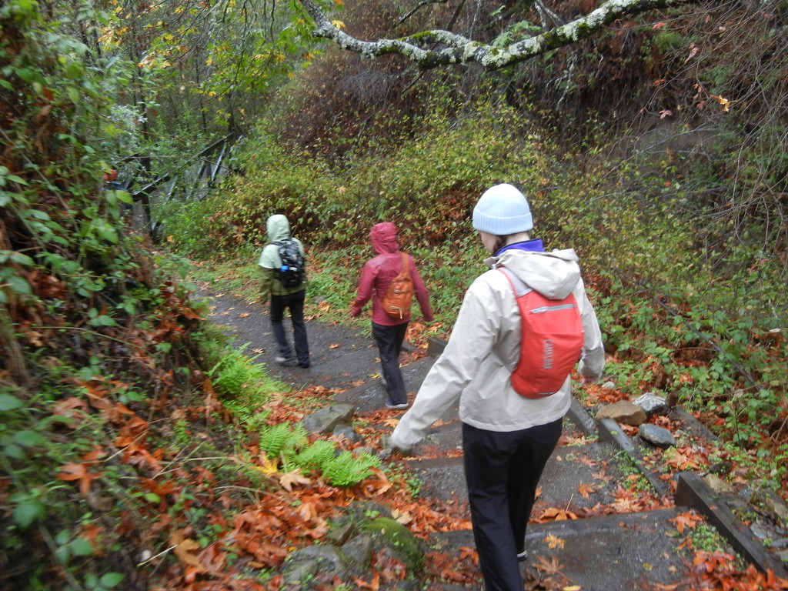

Everything Highway 1 Hides Behind Its Curves
There is no such thing as a quick drive through Big Sur. You can try — people do, usually once — but the road will not allow it. Highway 1 through this stretch of the California coast is sixty miles of continuous distraction, a two-lane ribbon cut into cliffs above the Pacific that demands your attention in every direction simultaneously. The ocean to the right. The Santa Lucia Mountains to the left. And around every blind curve, something that makes you hit the brakes and reach for the camera.
We drove it south, starting in Carmel on a Wednesday morning in late October, with no fixed itinerary and a trunk full of camping gear. The plan, loosely, was to stop whenever something looked worth stopping for. By the time we reached Lucia that evening, we had covered forty miles in six hours. We did not feel like we had wasted any time.

Nobody makes it past Bixby without stopping. It would be a kind of willful stubbornness to try. The bridge appears suddenly after a curve — a long concrete arch spanning a deep canyon where a creek cuts down to the ocean — and it is genuinely one of the more dramatic pieces of infrastructure in California, which is saying something.
We pulled into the north overlook and stood there for a while doing what everyone does, which is look at it from different angles and take photographs that will never quite capture the scale. There were maybe a dozen other people there, all doing the same thing, all arriving at the same conclusion: that photographs of Bixby Bridge are always slightly disappointing compared to the real thing, and that the real thing is worth every mile it took to get there.
The light was good — overcast enough to be soft, clear enough to see the water. We shot half a roll of film at the overlook and another half on the bridge itself, walking out to the middle where the wind picks up and the canyon falls away beneath you and the ocean spreads out to the west in a shade of blue that has no name in English.

The road demands a particular kind of driving that most people have to relearn from scratch. You cannot drive Highway 1 the way you drive a freeway, or even the way you drive a normal two-lane road. The curves are tight and the drop-offs are real and the pullouts appear without warning. You have to slow down not just because safety requires it but because the road was built by people who understood that you would want to stop constantly, and they tried to give you places to do it.
We stopped at every waterfall visible from the road. This turns out to be a significant number of stops. After the first significant rain of the season — which had come through the week before we arrived — the cliffs were running with water, thin white threads dropping hundreds of feet from the mountains above to the rocks below or in some cases directly into the ocean. Some of them had names. Most of them did not. We photographed them all anyway.
